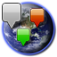

 Aide GMap
Le plugin GMap permet de géolocaliser les objets de SPIP (rubriques, articles, documents, brèves, mots-clefs et auteurs) et d'insérer, dans les squelettes et les articles, des cartes qui représentent ces objets.
Plus explicitement, le plugin permet :
- De géolicaliser la plupart des objets de SPIP (pour les documents, il faut le plugin Médiathèque) depuis la partie privée du site;
- D'insérer dans les squelettes des balises permettant d'afficher des cartes et de repréter les objet géolicalisés dessus, ainsi que d'y ajouter des marqueurs supplémentaires et des fichiers KML;
- D'insérer dans les textes des articles, rubriques, brèves, ces mêmes cartes et objets (marqueurs et fichier KML).
Les cartes utilisent les API Google Maps V2 ou V3, mais il est possible d'ajouter des implémentations de carte. Une implémentation OpenLayers serait par exemple souhaitable.
Mise en route
Pour faire fonctionner le plugin, vous devez au minimum :
- Paramétrer un type de représentation (par exemple pour l'implémentation Google Maps V2, donner une clef d'enregistrement Google), cf. paramétrage du plugin.
- Intégrer une balise #GEOMAP dans un squelette, ou un modèle <map> dans un texte.
Mais le plus intéressant sera tout de même de géolocaliser les objets SPIP de votre site.
Par exemple, le code suivant permet d'afficher une carte sur les objets géolicalisés :
<B_geo>
<BOUCLE_geo(GEOTEST){id_article}>[
(#GEOMAP{id_article,markers=query})
]</BOUCLE_geo>
</B_geo>
Informations détaillées
Partie privée / Géolocalisation
Dans la partie privée, le plugin permet d'effectuer les parémtrages nécessaires à son fonctionnement, et, surtout, de géolocaliser les objets de SPIP.
Partie publique / Affichage
Boucles
Les boucles sont utilisées dans les squelettes pour parcourir l'information géolocalisée.
- Boucle GEOTEST : test s'il y a des informations géolocalisées sur un objet.
- Boucle GEOPOINTS : parcours des points géolocalisés selon les critères SQL.
Balises
Balises d'usage courant dans les squelettes :
- Balise #GEOMAP : insertion d'une carte dans les squelettes.
- Balise #GEOMARKER : ajout manuel d'un marqueur sur une carte.
- Balise #GEOKML : ajout d'un fichier KML sur une carte.
- Balise #GEOCAPABILITY : test des possibilités d'un implémentation de carte.
- Balise #GEOPOINTS : renvoie le nombre de points associés à un objet.
Balises d'usage plus rare, en cas d'ajout de fichiers KML ou de développement d'extensions :
- Balise #GEOMARKERICONS : ajout des icones d'un marqueur dans un fichier KML.
- Balise #GEOPOPUP : ajout du contenu de la bulle d'information associée à un marqueur dans un fichier KML.
- Balise #URL_FICHIER : chemin d'accès SPIP à un fichier.
Modèles
- Modèle <map> : insertion d'une carte dans les textes.
- Modèle <marker> : ajout manuel d'un marqueur depuis un texte.
Autres fonctionnalités
Exemples
Ce plugin a été développé pour les parties Galerie de photos et Carnet de voyage du site L'Océanique.